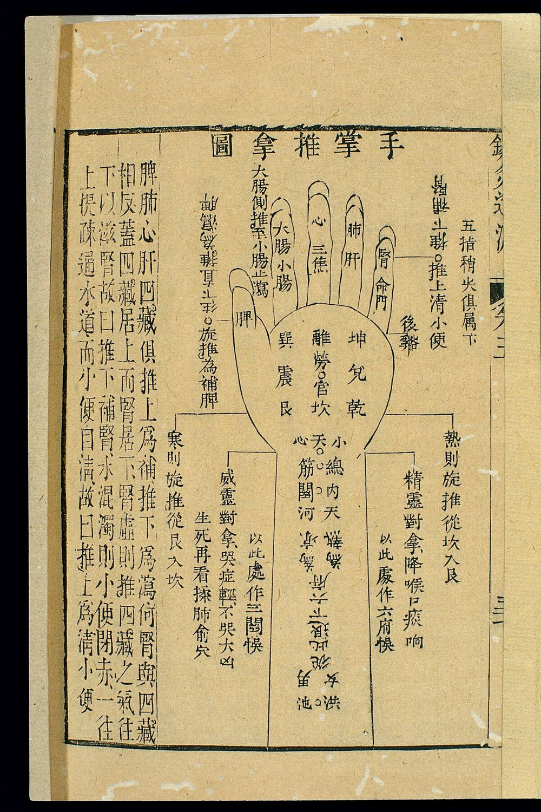
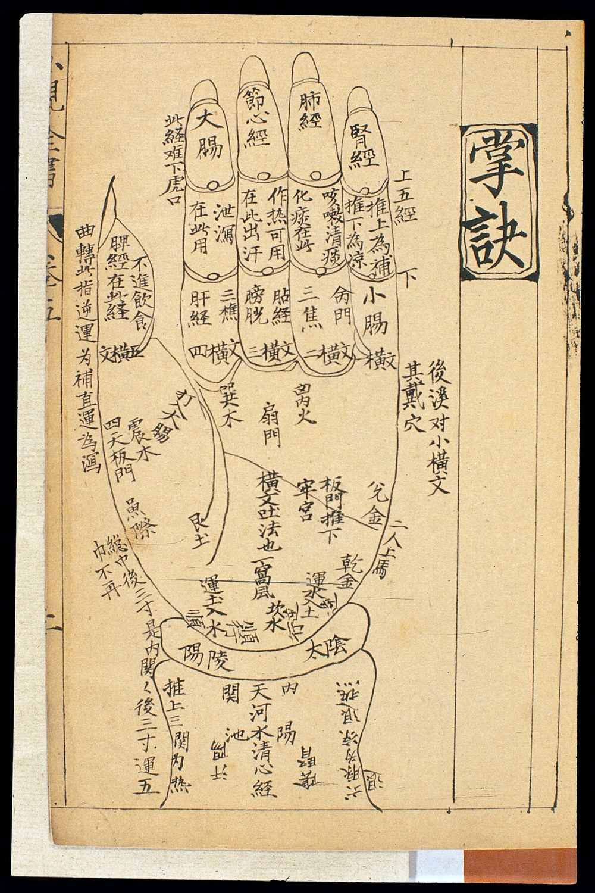
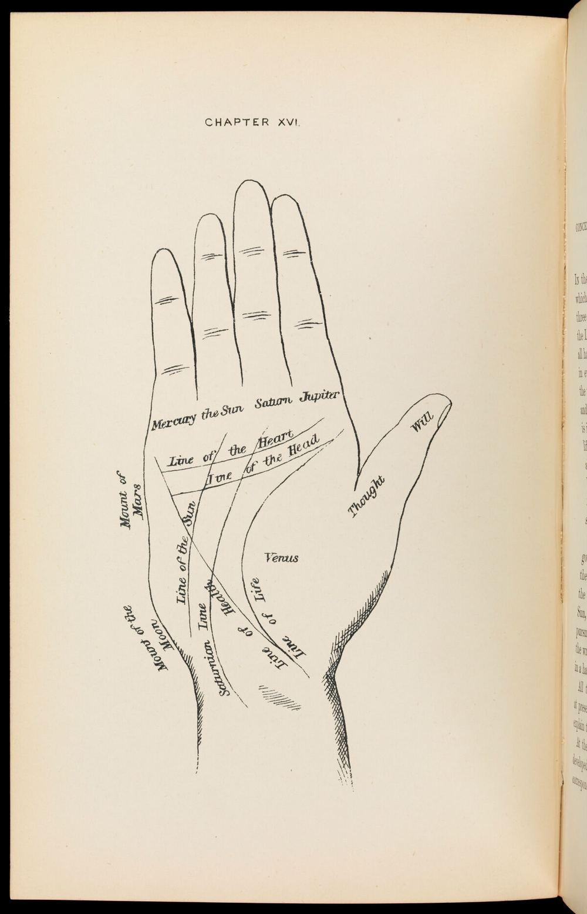
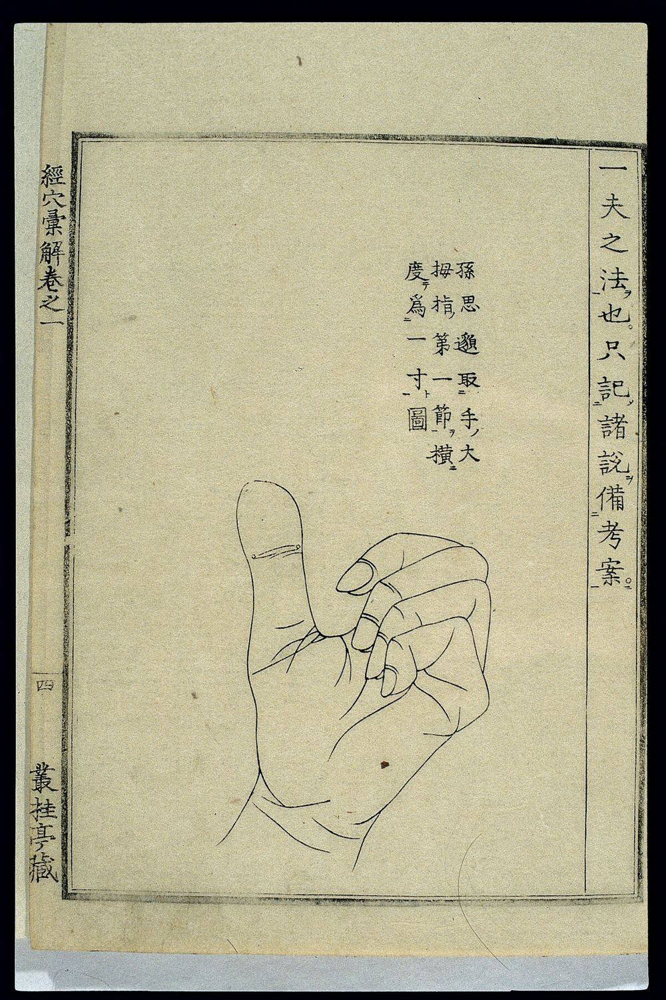
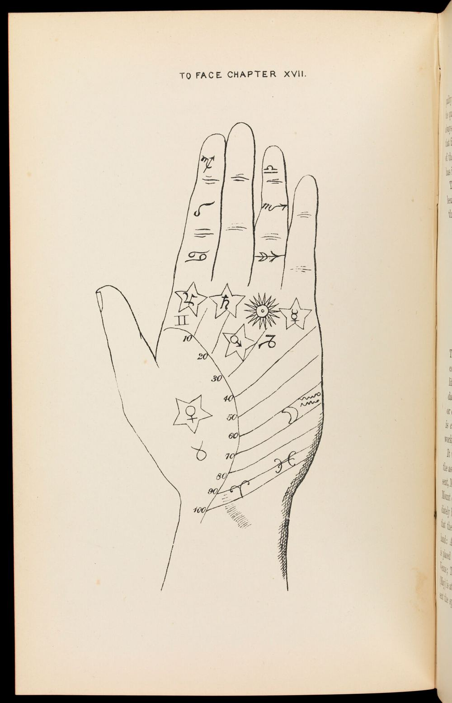
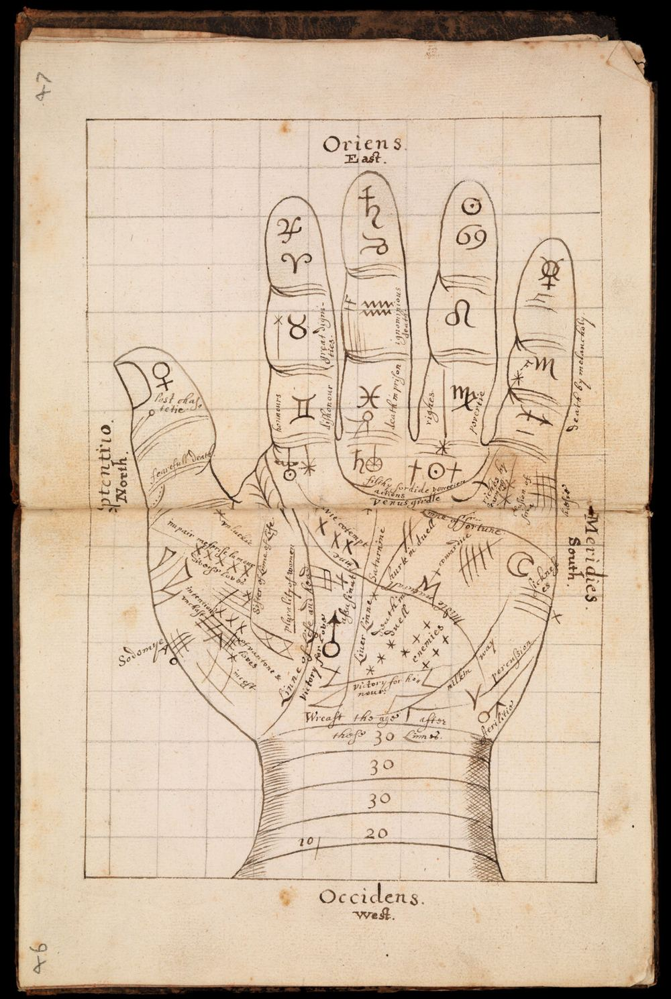
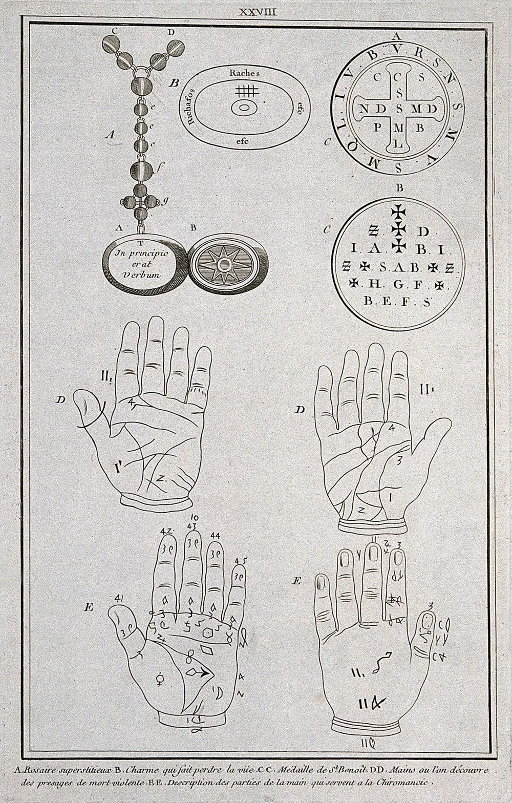
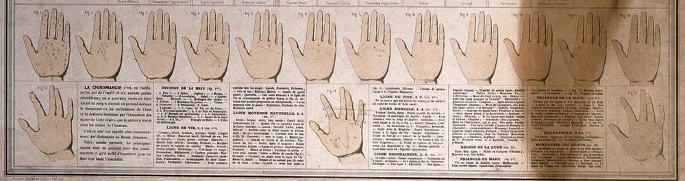
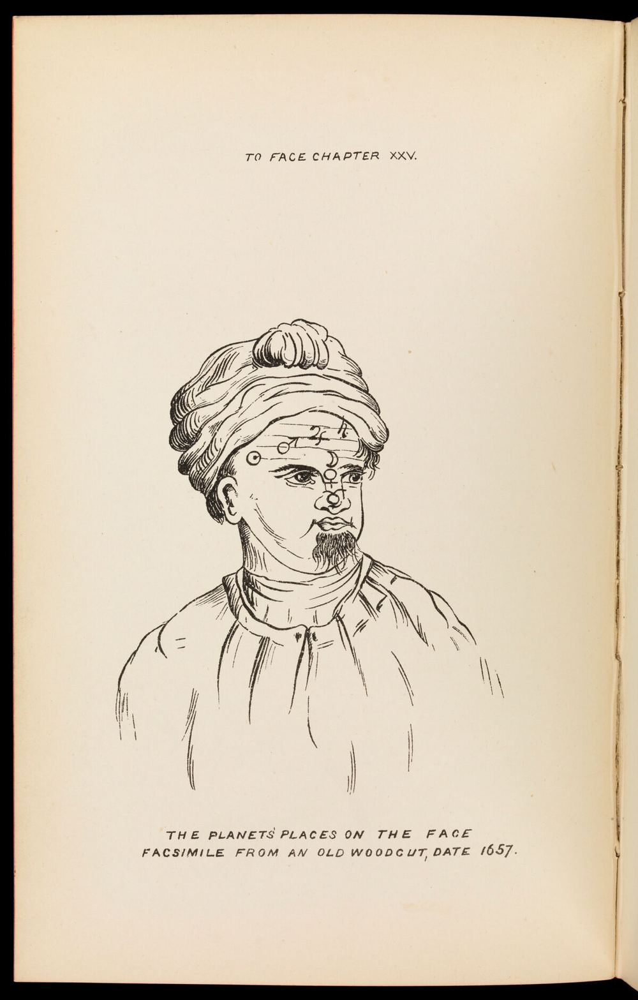
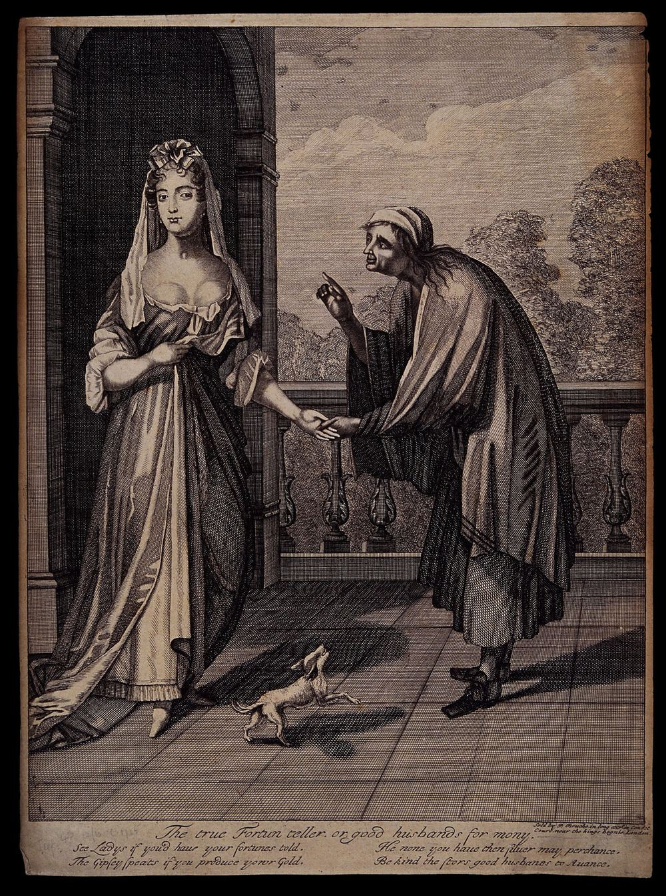

觀相識人自學講義
第三冊 手相結構
手型・三大主線與輔線・八卦掌位與行星丘・紋符・指節指甲・面相手相合參
這一冊帶你把「一隻手」拆開來看：傳統相書怎麼看、西方手相術怎麼看、兩者如何對照；再用皮紋學與醫學的眼光，把能觀察的、不能下結論的、可能傷人的部分分開。
自學講義，依公開課綱主題自行撰寫；非任何付費課程內容。
目錄
本冊導讀：怎麼讀這一冊
手相的兩個傳統：中式掌位與紋名、西式行星丘與主線、中西對照表
原典精讀：相書怎麼說手、指、掌、紋
手型、手指、指節與指甲
三大主線：生命線、智慧線、感情線
輔線：命運線、太陽線、婚姻線、健康線與其他
常見紋符：十字、島紋、星紋、方格、斷掌／通貫掌
誠實的科學視角：皮紋學、胎兒期形成、手部的合理觀察
面相手相合參：邏輯與循環論證風險
練習
常見誤解
反思題
一頁總結
延伸閱讀
圖片來源
本冊使用的三層標記
相書原說 傳統文獻（中國相書、西方手相書）怎麼主張。有原典的照抄原文並標篇名；沒有原典可核對的，標「後世通說，未能核對原典」。
合理成分 可以用日常經驗或醫學、生理學說得通的部分，例如手上的繭反映工作習慣。
沒有證據／有風險 沒有可靠研究支持，或拿來判斷他人會造成偏見、恐慌或歧視的部分。
一、本冊導讀：怎麼讀這一冊
手相大概是所有相術裡最「平易近人」的一種：伸出手來就能看，不必盯著別人的臉，也常被當作聚會時的小遊戲。正因為門檻低，它也最容易被誤用——一句「你的生命線好短」，可能讓聽的人擔心好幾年。
這一冊的目標有三個。第一，看懂地圖 ：知道手上哪裡叫什麼名字、中式和西式傳統各怎麼分區，能讀懂相書和手相書在講什麼。第二，分清層次 ：知道哪些說法有原典、哪些只是後世流傳；哪些觀察合理、哪些毫無證據。第三，好好使用 ：把「看手」從算命轉成觀察——觀察一個人的工作痕跡、健康習慣與手部動作，並學會把指甲、掌色的異常交給醫生，而不是交給相書。
先說一個讀完原典後會很意外的事實：我們手上能讀到的宋金相書，講手的篇幅其實很少，而且重點不在掌紋 。《人倫大統賦》講手，談的是指節直不直、手腕圓不圓、掌厚不厚、掌心深不深、手色紅不紅、摸起來軟不軟；紋只占兩句。《月波洞中記》甚至直說，只盯著紋理和黑痣，吉凶反而「森然難見」，根本在骨法與神氣。今天手相書裡最熱門的「三大主線」「八卦掌位」「斷掌」，在本冊能核對的原典裡都找不到——它們主要是明清以後的相書與近代中西手相書的發展。這一點，讀者在後面每一節都會看到標註。
先講清楚的立場
手相術預測壽命、婚姻、財運、性格，沒有經過對照研究的證據支持 。掌紋的主要線條在出生前就已形成，是手部屈曲留下的皮膚摺痕。本冊把手相當作「一種文化與觀察的語言」來學：學它的詞彙，理解它的邏輯，也看清它的限制。任何與健康有關的手部變化（指甲變形、顏色異常、手掌麻木疼痛），請看醫生。
二、手相的兩個傳統
世界上看手的傳統很多（印度、伊斯蘭世界、日本都有），本冊聚焦兩支今天最常見、彼此也互相影響的：中式手相 與西式手相術（chiromancy／palmistry） 。兩者都把手掌分成區域、替主要掌紋命名，但背後的世界觀不同：中式用的是八卦、五行、陰陽；西式用的是古典占星的七顆「行星」。
2.1 中式：八卦掌位與明堂
中式手相最常見的一張地圖，是把手掌當作一個小小的方位盤，套上後天八卦 ：掌心叫明堂 ，四周八個區塊分屬乾、坎、艮、震、巽、離、坤、兌。以右手掌心朝向自己（拇指在右）來看，大致位置如下圖。
巽 離 坤
兌 乾 坎
艮 震
明堂
掌心
八卦掌位（右手，掌心向己）
巽・木 食指下方
離・火 中指、無名指下方
坤・土 小指下方
兌・金 小指側掌緣中段
乾・金 小指側掌根
坎・水 掌根中央近腕處
艮・土 拇指根部（大魚際下段）
震・木 拇指側中段
明堂 掌心凹處
方位與上方卦序對應後天八卦：
離在上（南）、坎在下（北），
震、兌分居兩側（東、西）。
各宮主何事，各書分配不一；
屬後世通說，本冊原典未見。
圖 1 中式八卦掌位示意（自繪）。左手位置左右對調。這是一張「定位用」的地圖，不代表各宮真的主管人生某一方面。
相書原說 後世相書與坊間手相書常見一種分配：乾宮看父親、長輩與貴人；坎宮看祖業根基；艮宮看兄弟、家宅；震宮看配偶或做事的衝勁；巽宮看財帛；離宮看名聲、官祿；坤宮看母親與田宅；兌宮看子女、晚輩與部屬；明堂看整體氣運，以「掌心微凹、四周豐起」為佳。宮位飽滿、色澤明潤為吉，低陷、有亂紋或色暗為不足。後世通說，未能核對原典
合理成分 八卦掌位本質上是一套分區命名法 ，讓人能精確說出「哪一塊」。它與手部解剖的分區大致對得上：艮、震一帶是大魚際（拇指肌群），乾、兌一帶是小魚際，明堂是掌心凹陷處。肌肉豐不豐、掌心乾不乾、顏色紅不紅，確實會因工作、年齡、體溫與循環而不同。
沒有證據／有風險 沒有研究顯示某一區塊的飽滿或紋路與父母、兄弟、子女、財富有關。拿「坤宮陷」說人「剋母」、拿「巽宮薄」說人「守不住錢」，只會製造焦慮。
有趣的是，八卦掌位不只出現在相術裡。清代的小兒推拿書也把八卦畫在掌心，作為推拿手法的路線標記——同樣的地圖，在醫書裡被拿來定位 ，而不是算命 。下面兩張刻本正好可以拿來和圖 1 對照。

圖 2 〈手掌推拿圖〉，中國刻本小兒推拿書插圖。圖中右手（拇指在左，掌心向觀者）的掌心依序刻有巽、離、坤，震、勞宮、兌，艮、坎、乾，正是八卦掌位；五指標脾、大腸小腸、心、肺、腎等臟腑，兩側文字說明推拿方向的補瀉。與圖 1 左右鏡像，方位一致。這是推拿取穴的定位圖，不是相書。來源：Wellcome Collection，CC BY 4.0。

圖 3 〈掌訣〉，清代兒科推拿書插圖。掌心刻「巽木、離火、兌金、乾金、坎水、艮土、震木」等字，可以看到每一卦都配上五行；手指根部標「一橫文、二橫文……」，指節橫紋被當作取穴的地標。手相書的「紋」與醫書的「文」，用的是同一套觀察對象。來源：Wellcome Collection，CC BY 4.0。
2.2 中式的紋名：天、人、地三紋
中式手相把三條最明顯的掌紋叫作「三才紋」：最上面、靠近手指的是天紋 ，中間斜過掌心的是人紋 ，環繞拇指根的是地紋 。它們分別相當於西式的感情線、智慧線（頭腦線）、生命線。三紋若在掌上排得清楚分明，像個「川」字，坊間稱為「川字掌」；天紋與人紋合成一條橫貫全掌的線，就是俗稱的「斷掌」。另外還有「玉柱紋」（從掌根直上中指的直紋，相當於西式命運線）等名稱。後世通說，未能核對原典
值得注意的是，宋金相書裡確實有「紋」「理」的說法，但用法比較籠統：《人倫大統賦》說「橫紋下愚，縱理慧性」，講的是紋路的方向，而不是某一條有名字的線（見第三章）。
2.3 西式：七顆「行星」與主線
西方手相術在古希臘、羅馬就有零星記載，常被後世手相書引為源頭的是亞里斯多德動物學著作中關於掌紋與壽命的隻言片語。真正成體系是在中世紀晚期到文藝復興：拉丁文手抄本與早期印刷書把手掌與占星術結合，每一根手指、每一塊隆起（丘 ，mount）都配上一顆古典「行星」。十九世紀法國的達爾龐蒂尼（d'Arpentigny）提出以手型分類性格，德巴羅勒（Desbarrolles）整理掌丘與線紋，英語世界的通俗手相書再把它們普及化，形成今天大家熟悉的版本。
♃ ♄ ☉ ☿
♀ ☽ ♂ ♂
火星平原
西式行星丘（右手，掌心向己）
♃ 木星丘 食指下 企圖心、領導
♄ 土星丘 中指下 嚴肅、責任
☉ 太陽丘 無名指下 才藝、名聲
☿ 水星丘 小指下 口才、商業
♀ 金星丘 拇指根 熱情、體力
☽ 月丘 小指側掌根 想像、直覺
♂ 火星丘 兩處：拇指側（第一）、
小指側中段（第二） 勇氣、韌性
火星平原 掌心
右欄「寓意」為西式手相書的傳統說法，
不是研究結論。
第一、第二火星丘的名稱各書不同，
有的書稱「下火星」「上火星」。
圖 4 西式行星丘示意（自繪）。和圖 1 疊著看：木星丘≈巽、土星丘與太陽丘≈離、水星丘≈坤、第二火星丘≈兌、月丘≈乾、金星丘≈艮、第一火星丘≈震、火星平原≈明堂。

圖 5 十九世紀英國通俗占星手相書《The influence of the stars》（Rosa Baughan 著）第十六章插圖。右手掌心向己：手指根部寫 Mercury、the Sun、Saturn、Jupiter（水星、太陽、土星、木星），掌上標 Line of the Heart（感情線）、Line of the Head（智慧線）、Line of Life（生命線）、Saturnian Line（土星線，即命運線）、Line of the Sun（太陽線）、Line of Health（健康線），兩側標月丘、火星丘、金星；拇指兩節寫 Will（意志）與 Thought（思考）。幾乎就是今天手相書的標準配置，可與圖 4、圖 7、圖 8 對照。來源：Wellcome Collection，Public Domain Mark。
圖 6 英文手抄本〈Chyromancy〉（十七世紀前後）中的三隻手。上方兩手在指節上寫黃道十二宮符號，並把中指尖定為「天頂・東」、手腕為「天底・西」、拇指側為北——手被當成一張星盤。下方大手標出 Line of Life、meane line（中線，即智慧線）、Table line（桌線，即感情線）、Liver line（肝線）、milken way（銀河）、girdle（環）與 wrest line（腕線），並在掌丘上畫行星符號。可見早期西式主線的名稱和今天並不相同。來源：Wellcome Collection，Public Domain Mark。
2.4 中西對照表
下表把兩套地圖疊在一起，並加上醫學上的解剖名稱。解剖名稱這一欄很重要：它提醒我們，手相書「發現」的這些線與丘，本來就是手部構造的一部分，人人都有。
位置 中式名稱 西式名稱 解剖學名稱 傳統常見寓意（中／西） 食指下 巽宮 木星丘 第二掌指關節掌側 財帛／企圖心、領導 中指、無名指下 離宮 土星丘、太陽丘 第三、四掌指關節掌側 名聲官祿／責任、才藝名聲 小指下 坤宮 水星丘 第五掌指關節掌側 母親、田宅／口才、商業 小指側掌緣中段 兌宮 第二火星丘 小魚際上段 子女、部屬／韌性 小指側掌根 乾宮 月丘 小魚際下段 父親、貴人／想像、直覺 掌根中央 坎宮 （腕紋上方） 腕掌交界 祖業根基／— 拇指根 艮宮 金星丘 大魚際（拇指肌群） 兄弟家宅／熱情、體力 拇指側中段 震宮 第一火星丘 大魚際上緣、虎口內側 配偶、衝勁／勇氣 掌心 明堂 火星平原 掌心凹陷（掌腱膜區） 整體氣運／— 最上一條橫紋 天紋 感情線 heart line 遠側掌橫紋 情感、人際 中間斜紋 人紋 智慧線 head line 近側掌橫紋 思考方式、聰明 環繞拇指根 地紋 生命線 life line 大魚際紋 體力、壽命 掌根直上中指 玉柱紋 命運線（土星線） 不固定的縱向摺痕 事業、運勢起伏
寓意欄：中式部分為後世通說、未能核對原典；西式部分為十九世紀以後通俗手相書的常見說法。兩者都沒有實證支持，列出來只是為了讓你讀得懂相關文獻。
三、原典精讀：相書怎麼說手、指、掌、紋
我們在《月波洞中記》《人倫大統賦》《冰鑑》三部書中以「手、掌、紋、指、甲」逐字搜尋，把真正講手的段落挑出來精讀。結果可以先預告：談手最集中的是《人倫大統賦》卷下的一段；其餘多半是一兩句，夾在講全身或講體態的段落裡 。
3.1 《人倫大統賦》：手的一整段
指節欲其纖直，腕頭欲其圓勁。厚而密者，謀必有得；薄而疏者，心多不稱。勢若排筍貴可羨，色如噀血富無競。身卑才薄，乃中滿而八傾；祿厚官榮，蓋堂深而駟勝。橫紋下愚，縱理慧性。骨露筋浮者主身賤，皮堅骨枯者愁囊罄。家殷而黑子斯明，用足而橫紋乃亙。富貴之相，若苔之滑而綿之軟。壽安之人，如筍之直而玉之瑩。《人倫大統賦》卷下
腕頭 手腕與手掌相接處。
厚而密 手掌厚實、手指併攏時縫隙緊密。
不稱 不相稱、不如意。
排筍 像一排竹筍並列，形容手指修直齊整、由粗漸細。
噀血 噀（xùn），噴。手掌顏色紅潤如噴灑的血。
中滿而八傾 掌心凸起、四周（八方）反而低陷。與下句「堂深」相對。
堂深而駟勝 堂，掌心（後世稱「明堂」）；掌心深凹。「駟」字疑通「四」，指掌心四周隆起較高；此解為推測，未見古注。
橫紋、縱理 紋、理同義，皆指皮膚紋路。橫向的紋與縱向的理。
囊罄 錢袋空了。
黑子 黑痣。
用足、亙 用度充足；亙，橫貫。「橫紋乃亙」指有橫紋貫通。
苔之滑、綿之軟 手掌觸感滑如青苔、軟如絲綿。
筍之直、玉之瑩 手指直如筍，色澤光潤如玉。
手指的關節要細而直，手腕要圓而有力。手掌厚實、指縫緊密的人，謀事多半有所得；手掌單薄、指縫稀疏的人，往往事不如意。手指像一排竹筍般修直，貴氣令人羨慕；掌色紅潤如噴血，富足無人能比。地位低、才具薄的人，掌心反而凸起、四周低陷；俸祿厚、官位高的人，掌心深凹而四周高起。橫紋多的人愚鈍，縱紋多的人聰慧。骨節突出、青筋浮起的人主身分低微；皮硬骨瘦的人常為錢發愁。家境殷實的人手上黑痣明亮；用度充足的人有橫紋貫通。富貴的手，滑如青苔、軟如絲綿；平安長壽的人，手指直如竹筍、色澤瑩潤如玉。
解說。 這段是本冊三部書中唯一成段講手的文字，讀完有幾個發現：
重形質、輕紋路。 十四句裡，講指節、手腕、厚薄、掌心深淺、顏色、觸感的占了大半，紋只有「橫紋下愚，縱理慧性」與「橫紋乃亙」兩處。古人「看手」首先是摸 和看形狀 ，和今天「看三條線」的手相大不相同。前後有張力。 上句說「橫紋下愚」，下句又說「用足而橫紋乃亙」，橫紋一下是缺點、一下又是富足的徵象。賦體文字講求對仗，常常為了句式而並列不同來源的說法；這也提醒我們，相書本身並不是一套嚴密一致的理論。和身分勞動纏在一起。 「骨露筋浮者主身賤，皮堅骨枯者愁囊罄」「富貴之相，若苔之滑而綿之軟」——換個角度讀：長年體力勞動的手，本來就會骨節粗大、青筋明顯、皮膚堅硬；養尊處優的手，自然滑軟。相書把勞動留下的痕跡 當成貧賤的原因或徵兆 ，其實是倒果為因。
相書原說 指直腕圓、掌厚指密、掌心深、色紅、觸感軟滑為貴壽之相；骨露筋浮、皮硬骨枯為貧賤。
合理成分 手的粗細軟硬確實能反映過去的工作與生活方式 ；掌色紅潤與否與體溫、循環有關；手指關節粗大可能來自勞動，也可能是關節炎等健康問題，值得留意。
沒有證據／有風險 把勞動的手判為「賤」，是階級偏見寫進了相書；沒有證據顯示手的形狀能預測富貴或智力。「橫紋下愚」更不應拿來評價任何人的聰明程度。
3.2 《人倫大統賦》：連腳底的紋也看
豐厚方正者多閒暇，枯澀橫窄者必苦辛。無紋身賤，有毛家溫。富累千金，蓋有弓刀之理；官封一品，由成魚鳥之紋。《人倫大統賦》卷下（論足）
枯澀橫窄 腳乾枯粗澀、橫寬而窄短。
弓刀之理 形狀像弓、像刀的紋路。
魚鳥之紋 形狀像魚、像鳥的紋路。
腳豐厚方正的人多半清閒，枯澀橫窄的人必定辛苦。腳底沒有紋路的身分低，有毛的家境溫飽。富累千金，是因為有像弓、像刀的紋；官至一品，是因為紋路成了魚、鳥的形狀。
解說。 這段講的是腳，放在這裡是為了看清相書的「紋」的文法：找出一個像某物的形狀，再賦予它吉凶 。弓刀象徵武功、魚鳥象徵騰躍，都是由形狀聯想到意義。後世手相書的「魚紋」「十字紋」「井字紋」，用的是同一種聯想邏輯。至於「腳上的厚繭與粗糙」，同樣多半來自走路與勞動——又一次把生活痕跡讀成命運。
3.3 《冰鑑・容貌》：手要放在全身裡看
容以七尺為期，貌合兩儀而論。背腹手足，實接五方；耳目口鼻，全通四氣。相顧相稱則福生，如肖如湊，則林林總總不足論也。《冰鑑》容貌章第三
容貴整，整非整齊之謂。短不豕蹲，長不茅立，肥不熊餐，瘦不鵲寒，所謂整也。背宜圓，腹宜突坦，手宜溫軟，曲若彎弓，足宜豐滿，下宜藏蛋，所謂整也。五短多貴，兩大不揚，負重高官，鼠行好利，此為定格。他如手長其身，身長過於體，配以佳骨，定主封侯。《冰鑑》容貌章第三
七尺 指人的整個身軀。
兩儀 陰陽。
五方、四氣 東南西北中五方；春夏秋冬四時之氣。說身體各部分與天地方位、時令相應。
相顧相稱 彼此照應、比例相稱。
如肖如湊 像是勉強拼湊起來的樣子。
曲若彎弓 手自然彎曲時像拉開的弓，有弧度、有彈性。
手長其身 手臂相對身軀顯得長。
看「容」以整個身體為範圍，看「貌」要從陰陽兩面來論。背、腹、手、足對應五方，耳、目、口、鼻通連四時。各部分彼此照應、比例相稱，福氣就來；如果像是拼湊起來的，零零總總也就不值得論了。……容貴在「整」，但整不是整齊。矮不像豬蹲著，高不像茅草孤立，胖不像熊般臃腫，瘦不像寒鵲般瑟縮，這才是整。背要圓，腹要微凸而平坦，手要溫暖柔軟、自然彎曲時像彎弓，腳要豐滿，……這也是整。……此外像手臂長於身軀、身軀長過下體，再配上好的骨相，必定封侯。
解說。 《冰鑑》（作者歸屬有爭議，維基文庫本署「羅祖真人」，坊間常說是曾國藩所作）講手只有「手宜溫軟，曲若彎弓」與「手長其身」兩處，而且都放在「整」這個概念底下：重要的不是手本身，而是手與全身是否「相顧相稱」 。這正是後面第九章「面相手相合參」的源頭思想。「手宜溫軟」則有合理的一面：手冰冷可能只是天冷或緊張，但長期四肢冰冷、蒼白，也可能與循環或其他健康狀況有關，值得問醫生。
3.4 《月波洞中記》：紋理不是重點
其部分眾多，其象類參雜，若定取紋理黑子，則吉凶之理森然難見。要其大只，在於骨法神氣，但先相其骨法，觀其神氣，則貴賤自明矣。凡骨形已見，以手揣而識之者，名為骨法；骨形未見，以眼看而識之者，名為骨氣。《月波洞中記》卷上
部分 面部、身體劃分出的部位。
定取 固定地、單單地取用。
森然難見 繁雜幽深，難以看清。
大只 疑即「大旨」，要點。
揣 用手摸、捏以探知。
相法的部位很多，各種形象又互相夾雜，如果只抓住紋理和黑痣來判斷，吉凶反而複雜難辨。要點在於骨法與神氣：先看骨法，再觀神氣，貴賤自然分明。凡是骨形已經顯露、可以用手摸出來的，叫「骨法」；骨形還沒顯露、要用眼睛看出來的，叫「骨氣」。
解說。 這段話對今天的手相熱潮是一記提醒：至少在這部宋代相書的作者看來，盯著紋路是捨本逐末 。這裡的「手」是相者用來摸骨的工具，而不是被看的對象。
3.5 《月波洞中記》：散見的指與甲
神骨馬象者俱全，大富貴。十指如瓶瓦，雙背全然厚，足下要平平。……富貴要聰明，指甲如瓶瓦，足下更平平，止于富也。《月波洞中記》卷下
印堂闊而不富，何也，多是竣高不平，手平背大根氣堅牢。《月波洞中記》卷下
神骨馬象 本書的專門術語，指神、骨與面部「馬」「象」等部位或格局；確切所指本書他處說法不一。
瓶瓦 瓶身的弧面、屋瓦的弧度。大約形容指甲（或指頭）飽滿、有弧度而厚實。此為推測。
竣高 疑同「峻高」，陡峭高起。
根氣 根本之氣。
神、骨、馬、象各部都齊全的，大富大貴。十根手指（指甲）像瓶瓦般飽滿有弧度，兩肩背都厚實，腳底要平。……若要富又要聰明，指甲像瓶瓦，腳底更平，則僅止於富。／印堂寬闊卻不富，為什麼？多半是因為（印堂）陡高不平。手平、背寬大，根本之氣才堅牢。
解說。 「指甲如瓶瓦」是本冊原典中唯一直接講指甲形狀的句子，評價標準是「飽滿有弧度」。第二段很值得記住：印堂闊本該富，卻不富，怎麼辦？ 作者的回答是「其實它不平」，再補一句手與背的條件。這就是相書處理「例外」的典型手法——用另一個部位來解釋。我們會在第九章把它畫成流程圖，看它為什麼會變成循環論證。
原典核對小結
有原典可查的： 指節、腕、掌厚薄、掌心深淺、掌色、觸感、橫紋縱理（《人倫大統賦》卷下）；手溫軟、手長其身、各部相稱（《冰鑑》容貌章）；不專取紋理、以手揣骨、指甲如瓶瓦、手平背大（《月波洞中記》卷上、卷下）。本冊原典查無、屬後世通說的： 八卦掌位與明堂各宮主事、天地人三紋、生命線／智慧線／感情線、命運線（玉柱紋）、婚姻線、斷掌、川字掌、十字紋、島紋、星紋、井字紋，以及「男左女右」看手的規則。《神相全編》《麻衣神相》《柳莊相法》等明清相書據說有較多手相內容，但維基文庫無本，本冊不引。
四、手型、手指、指節與指甲
4.1 手型：中式五行與西式分類
第一冊介紹過以五行分臉型與手型；手相書沿用這套分類：木形手 瘦長、指節略顯；火形手 掌尖指尖、上窄下寬；土形手 厚實方短；金形手 方正、骨肉勻稱；水形手 圓潤肥軟。後世通說，詳見第一冊 西方則有十九世紀達爾龐蒂尼的七分法（基本型、匙型、圓錐型、方型、哲學型〔多節〕、尖型、混合型），以及二十世紀以後流行的「四元素」分法：只看兩個比例——手掌是方是長 、手指比手掌長或短 。
方掌・短指 方掌・長指 長掌・短指 長掌・長指
西式「土型」 西式「風型」 西式「火型」 西式「水型」
圖 7 西式「四元素」手型分類的兩個比例（自繪）。手相書會替每一型配上性格（土型務實、風型善思、火型衝勁、水型敏感），這些是傳統說法，沒有研究支持；但「手掌與手指的比例因人而異」本身是事實，而且主要由遺傳與骨骼發育決定。
相書原說 手型對應性格與適合的職業：方手務實、尖手藝術、厚手有福等。
合理成分 手的大小、粗細與身高、骨架、性別、族群、遺傳有關；長期從事某些工作會改變手的肌肉與皮膚（例如攀岩者指節粗厚、鋼琴家手指伸展度大）。這是「職業塑造手」，不是「手決定職業」。
沒有證據／有風險 用手型判斷一個人適不適合某工作，等於用骨架篩選人，既不準確也不公平。
4.2 手指與指節
手相書看手指主要看三件事：長短比例 （例如食指與無名指誰長，西式說食指長主自信、無名指長主冒險）、指節 （指節粗大的「多節手」主思考、平滑的主直覺）、指節間三段的長短 （拇指第一節主意志、第二節主邏輯，見圖 5 拇指上的 Will 與 Thought）。中式則延續《人倫大統賦》「指節欲其纖直」「勢若排筍」的審美：直、細、漸收為佳。西式說法為通俗手相書常見；中式見前引原典
一個真實但常被誇大的研究：2D:4D 指長比
食指（第二指，2D）與無名指（第四指，4D）的長度比，是心理學與生物學中真實存在的研究題目。一些研究認為它與胎兒期接觸雄性激素的程度有關，並與某些特質有微弱的統計相關。但這類研究效應很小、重複研究結果不一，而且是群體平均 的微小差異，無法用來判斷任何一個人 。手相書「無名指長的人愛冒險」看起來好像有了科學背書，其實兩者完全不是一回事。
手指和指節在醫學傳統裡另有一個很實際的用途：當作量尺 。中醫取穴用「同身寸」，以病人自己手指的寬度或指節的長度為單位，因為人的手指長短大致與身材成比例。

圖 8 日本刻本《經穴彙解》卷之一的取寸圖。右上題「孫思邈取手大拇指第一節橫為一寸度圖」：以拇指第一節的橫寬作為一寸，圖中拇指節上畫有兩點標示量法。同一個「指節」，在醫書裡是量尺，在相書裡是命運的符號——這是看手的兩種態度。來源：Wellcome Collection，Public Domain Mark。
4.3 指甲
《月波洞中記》說「指甲如瓶瓦」為富貴之相；後世手相書則把指甲形狀（長、短、寬、窄、扇形、杏仁形）對應到性格與體質，例如甲短而寬主急躁、甲長主溫和。後世手相書說法，未能核對原典
在所有看手的內容裡，指甲是醫學上真正會看的地方 。醫師檢查時會留意指甲的顏色、形狀、表面與甲床。但請注意：以下列出的是「可能值得就醫詢問」的變化，不是自我診斷的清單 。同樣的外觀可能有許多原因，其中很多是無害的。
看到的變化 常見的無害原因 為什麼值得讓醫生看看 指尖變圓胖、指甲向下包覆（杵狀指） 少數人天生如此 若是逐漸出現，醫學上可能與心肺等慢性狀況相關，需要檢查 指甲變薄、中央凹陷如湯匙 常泡水、清潔劑、外傷 可能與缺鐵等營養問題有關 指甲上的橫向凹溝 指甲受撞擊、修甲過度 有時出現在一段大病、高燒或重大壓力之後，可回想近期身體狀況 縱向的深色條紋（尤其是新出現、變寬或顏色不均） 深膚色者常見的色素帶、外傷出血 少數情況需要排除甲下病變，應盡早就醫 甲床蒼白、發紫、發黃增厚 寒冷、指甲油、年齡 可能與貧血、循環或黴菌感染等有關 指甲表面細細的縱紋 隨年齡增加很常見 通常無須擔心；若伴隨其他變化可一併詢問
相書原說 指甲飽滿如瓶瓦為貴；甲形對應性格。
合理成分 飽滿、平滑、粉紅的指甲常反映營養與循環良好；咬指甲、撕甲邊的痕跡反映緊張習慣；指甲的整潔反映生活習慣與工作性質（園藝、修車、化學實驗）。
沒有證據／有風險 甲形不能看出性格。更大的風險是把值得就醫的變化 解讀成「運勢」而延誤檢查。
五、三大主線：生命線、智慧線、感情線
幾乎每個人的手掌上都有三條最深、最明顯的摺痕。手相書稱為生命線、智慧線（頭腦線）、感情線；中式稱地紋、人紋、天紋；醫學上稱大魚際紋、近側掌橫紋、遠側掌橫紋。它們是屈曲摺痕 （flexion creases）：皮膚在關節彎曲時固定摺疊的位置，就像紙張反覆對折留下的摺線。
感情線
智慧線
生命線
起點：拇指與食指之間
（智慧線與生命線常在此相連）
三大主線（右手，掌心向己）
感情線＝天紋
遠側掌橫紋。從小指側掌緣起，
橫過掌上部，止於食指、中指下。
智慧線＝人紋
近側掌橫紋。從虎口起，
斜向小指側掌緣。
生命線＝地紋
大魚際紋。從虎口起，
繞拇指根部肌肉向手腕彎下。
三條線各自對應手部的一組動作：
四指一起彎（感情線）、
食指中指先彎（智慧線）、
拇指向掌心靠攏（生命線）。
圖 9 三大主線（自繪）。試著慢慢握拳：你會看到每條線正好是皮膚摺起來的地方。
5.1 生命線（地紋）
相書原說 西式傳統以生命線長短、深淺看體力與壽命，斷裂主疾病或意外，並在線上標示年齡刻度（見圖 10）。近代不少手相師改口說「生命線不代表壽命長短，只代表活力」。中式稱地紋，主根基、體質與家運。後世通說，未能核對原典
合理成分 生命線環繞的是拇指根部的肌肉（大魚際）。這塊肌肉發達、拇指活動範圍大，弧線就畫得比較寬；肌肉萎縮（例如某些神經壓迫）時，外觀會改變——那是神經科或手外科要看的事，不是壽命。
沒有證據／有風險 沒有可靠證據顯示生命線長短能預測壽命。告訴別人「你生命線短」，是本冊最不鼓勵的一句話。

圖 10 Rosa Baughan《The influence of the stars》第十七章插圖。生命線（拇指側弧線）旁標有 10 到 100 的年齡刻度，從刻度向小指側畫出多條斜線，延伸到月丘與掌緣；各指節寫黃道符號，掌丘上以星形框住行星符號。這就是西式「流年法」：把一條皮膚摺痕當作一生的時間軸。看得出來，刻度的位置完全是畫圖者的約定，手掌大小不同的人，同一點會被讀成不同年紀。來源：Wellcome Collection，Public Domain Mark。
5.2 智慧線（人紋、頭腦線）
相書原說 線長而清晰主思慮周密；平直主務實、理性，下彎向月丘主想像力豐富；起點與生命線相連主謹慎，分開主獨立果斷；線末分叉稱「作家叉」。西式通俗手相書說法 《人倫大統賦》另有「橫紋下愚，縱理慧性」的說法，方向判斷正好與「智慧線是橫線」相反。
合理成分 智慧線的走向與食指、中指的彎曲方式及掌型比例有關。它和「智慧」的關係只在名字上。
沒有證據／有風險 沒有證據支持掌紋與智力、思考風格有關。用它評價孩子「聰不聰明」尤其不妥。
5.3 感情線（天紋）
相書原說 止於食指下主理想化、重承諾；止於中指下主實際、重自我；線上多細枝主多情；鏈狀主情感起伏。中式稱天紋，兼看與長輩、上位者的關係。後世通說，未能核對原典
合理成分 感情線是四指一同彎曲時的摺痕，長度與彎曲度受掌寬、指長影響。
沒有證據／有風險 用感情線判斷伴侶會不會變心、適不適合結婚，沒有任何根據，卻可能影響真實的關係決定。
一個容易忽略的事實：左手右手不一樣
多數人兩手的掌紋並不相同。中式俗說「男看左、女看右」，西式則說「慣用手看現在與後天、非慣用手看先天」。後世通說 兩種規則互相矛盾，也都沒有驗證。實際上，兩手掌紋的差異說明了：胎兒期發育的細微隨機差異，就足以讓同一個人的兩隻手長出不同的「命」。
六、輔線：命運線、太陽線、婚姻線、健康線與其他
三大主線以外的線，因人而異：有的人很明顯，有的人幾乎沒有。這一點本身就很重要——輔線「有沒有」大多取決於皮膚、掌型與手部使用方式 ，而手相書卻常把「沒有」解讀成「缺了什麼運」。
命運線
太陽線
健康線
婚姻線
金星環
腕紋
常見輔線（淡色為三大主線）
命運線（事業線、土星線、玉柱紋）
從掌根向中指直上。很多人沒有或只有一段。
太陽線（成功線）
無名指下的縱線。多數人很短或沒有。
健康線（水星線）
由掌下方斜向小指。許多手相書說「沒有更好」。
婚姻線（感情支線）
小指根下、掌緣上的短橫紋。
金星環
感情線上方的弧線，常斷續不全。
腕紋（手頸線）
手腕上的橫紋，西式稱 rascettes。
各線寓意見正文三層判讀。
輔線的有無與長短，個人差異極大，
也最容易隨年齡、皮膚狀況而改變。
圖 11 常見輔線（自繪）。命運線與健康線的走向，在不同手相書中畫法不完全相同。
輔線 相書原說（後世通說／西式通俗手相書） 合理成分 沒有證據／有風險 命運線（事業線） 深直主事業穩定、少年得志；起於月丘主靠他人提攜；中斷主轉業或挫折。 縱向摺痕與掌心收攏的動作有關，常在手掌較瘦、掌心較凹的人身上明顯。 「沒有事業線」會被說成「一生漂泊」，對求職中的人尤其傷人。沒有任何證據。 太陽線 主名聲、成就、藝術才華；有此線者易成功。 同上，屬不固定的縱向摺痕。 倒果為因：成功與否無法由一條常常不存在的線決定。 健康線（水星線） 主健康與消化，線亂主多病；也有書說主商才。 —（與內臟健康無關） 拿掌紋判斷健康，可能讓人忽略真正的症狀或白擔心。 婚姻線 條數主婚姻或重要感情次數；下彎主婚姻不順；分叉主分離。 這些短紋是小指屈曲時掌緣皮膚的摺痕，條數與皮膚鬆緊、年齡有關。 最常被拿來「斷」別人感情，最容易造成傷害。年長後皮膚鬆弛，條數往往會增加——難道婚姻次數也會增加？ 金星環 主敏感、情緒化、感受力強。 — 容易被拿來貼「情緒化」標籤。 腕紋 條數主壽命（每條約二三十年）；第一條上彎，女性主生育困難。 手腕屈曲的摺痕，幾乎每個人都有二至三條。 關於生育的說法尤其不應出口，屬於沒有根據且可能深深傷人的斷語。

圖 12 英文手抄本中的手相圖（約十七世紀），手掌畫在方格紙上，上方寫 Oriens（東）、下方 Occidens（西），拇指側 Septentrio（北）、掌緣 Meridies（南）。手指寫行星與黃道符號，掌上密密麻麻標注 Linne of Life（生命線）、Liver line（肝線）、Saturnine、Line of Fortune（命運線）、Venus girdle（金星環）、milkie way、percussion，以及十字、星號、格紋等記號，旁邊寫著 honours（榮譽）、riches（財富）、poverty（貧窮）、death by melancholy（憂鬱致死）、death in prison、sterilitie（不孕）等斷語；腕上畫三道腕紋並寫 30、30、20 的年數。它示範了手相術最令人不安的一面：每一個小記號都可能被配上一個死法或缺陷。來源：Wellcome Collection，Public Domain Mark。
七、常見紋符
手相書除了「線」，還會看線上或掌丘上出現的小記號——十字、島形、星形、方格等。它們的解讀規則大同小異：先認形狀，再看位置，然後用「形狀的聯想 × 位置的寓意」得出結論 。例如「星紋」在太陽丘主大名，在土星丘主災厄。這正是前面《人倫大統賦》「弓刀之理」「魚鳥之紋」的同一種文法。
十字紋 島紋 星紋 方格紋 井字紋（格子）
三角紋 鏈狀紋 斷續（重疊） 一般掌 通貫掌（斷掌）
兩短紋交叉 線上分開又合起 三四條短紋交於一點 方框圍住線段 縱橫短紋交織
三紋圍成三角 線由小環串成 線斷開、兩段錯開 感情線與智慧線分開 兩線合成一條橫紋
圖 13 常見紋符圖例（自繪）。除最後兩格外，這些記號幾乎在每個人手上都找得到幾個，只是多寡、位置不同。
紋符 相書原說（後世通說，未能核對原典） 我們該怎麼看 十字紋 在木星丘主好姻緣；在掌心稱「神祕十字」主靈性；在線上主阻礙。 同一個記號隨位置可吉可凶，解讀彈性極大，因此幾乎任何結果都說得通。 島紋 多為不吉：在生命線主體弱、在智慧線主思慮困擾、在感情線主感情低潮。 皮膚摺痕偶爾分岔再合流，是常見的形態。不應拿來暗示疾病。 星紋 在太陽丘主大名，在土星丘主災厄，在月丘主遠行意外。 同上；「災厄」類斷語尤其不宜說出口。 方格紋 「保護紋」：圍住斷裂或島紋，表示化險為夷。 典型的「補救條款」：先說有凶，再說有救。這類規則讓預測永遠不會錯（見第九章）。 井字紋、三角紋 井字多主才華或煩惱（各書相反）；三角主才智。 各書說法不一，本身就說明它缺乏穩定的依據。 鏈狀、斷續 鏈狀主不穩定；斷裂主變故，重疊斷裂主轉折有接續。 線紋深淺與皮膚乾濕、厚薄有關，同一個人冬天與夏天都可能看起來不同。
7.1 斷掌／通貫掌：俗說、醫學與倫理
相書原說 中式俗稱「斷掌」，民間說法極多：說斷掌的人個性剛強、做事果斷、「打人會痛」；還有對男性斷掌、女性斷掌作截然相反評價的俗諺，例如男性主事業有成、女性主婚姻不順或「剋夫」。民間俗說，本冊原典查無 西式稱 simian line，舊時手相書主極端、專注或情緒強烈。
合理成分 醫學上稱為單一掌橫紋 （single transverse palmar crease），是感情線與智慧線位置合成一條的掌紋型態。在一般人口中大約占百分之一到數個百分點，比例因族群、定義、單手或雙手而不同。它是皮紋學研究中少數有明確統計關聯的特徵：在某些先天狀況（例如唐氏症）的人身上出現比例較高，約有半數；但反過來，絕大多數有通貫掌的人完全健康 。
沒有證據／有風險 統計關聯不是診斷：醫生不會只憑掌紋說一個孩子有什麼狀況，旁人更不應該。至於「女性斷掌剋夫」這類說法，把一條皮膚摺痕變成對女性的污名，是本冊明確反對的用法。

圖 14 十八世紀法文圖版，第 XXVIII 版。圖下說明：A 迷信的念珠、B 致人喪命的符咒、C 聖本篤獎章、DD「可從中看出橫死預兆的手」、EE「手相術所用的手部各區說明」。整張圖版的主題是「迷信」——編者把手相和護身符、咒物放在同一頁。下方四隻手上有編號的線紋與符號（行星、黃道記號），正是本章所說的「形狀 × 位置」讀法。來源：Wellcome Collection，Public Domain Mark。
八、誠實的科學視角
8.1 掌紋是怎麼來的
手掌上其實有兩種完全不同的「紋」：
屈曲摺痕 （flexion creases）：就是三大主線和大部分輔線。胎兒的手大約在懷孕第二到第三個月（約第 7 週到第 14 週）開始出現主要摺痕，此時胎兒的手已經會動。摺痕的位置與手掌骨骼、關節的形狀與早期的手部活動有關。皮紋 （dermatoglyphics，即指紋、掌紋上的細小乳突紋）：約在懷孕第 10 週後開始形成，大約到第四個月左右定型，一生不變（除非受傷結疤）。這就是指紋可以用來辨識身分的原因。
所以，三大主線在你出生前就已經畫好了。它們成形時，你的壽命、婚姻、事業都還不存在。生命線若真能預告壽命，它必須在胎兒期就「知道」未來幾十年的意外、疾病與醫療進步——這在因果上說不通。
另一方面，細小的輔助摺痕會變 ：年齡增長皮膚變鬆、長期乾燥、勞動、體重變化，都會讓細紋增減或深淺改變。手相書把這種變化說成「命運在改變」；比較簡單的解釋是：皮膚在改變。
8.2 皮紋學真正在研究什麼
「皮紋學」（dermatoglyphics）這個詞是 1926 年由美國解剖學家卡明斯（Harold Cummins）等人提出，研究的是指紋、掌紋的乳突紋型態（弓、箕、斗）與掌紋摺痕。它真實的研究範圍包括：
遺傳學與發育生物學 ：紋型的遺傳性、胎兒期手部發育。人類學 ：不同族群紋型頻率的差異。臨床醫學的歷史角色 ：在基因檢測普及以前，某些染色體異常與皮紋特徵（如單一掌橫紋、特定指紋型）的統計關聯 ，曾被當作輔助線索之一。今天確診靠的是染色體與基因檢查，而不是看手。鑑識科學 ：指紋辨識。
統計關聯不能用來給人貼標籤
「某特徵在 A 群體出現較多」，不等於「有這個特徵的人就屬於 A 群體」。如果某掌紋在一般人口中占 2%，在某狀況的人中占 50%，那麼在一大群有這種掌紋的人裡，絕大多數仍然是一般人口 ——因為一般人口遠遠更多。這是統計上的「基本比率」問題，也是我們不能憑手判斷任何人健康或能力的根本原因。坊間有「皮紋檢測天賦」的商業服務宣稱能從指紋看出孩子的天賦或學習類型，這類說法沒有可靠的科學證據支持。
8.3 為什麼手相「聽起來很準」
巴納姆效應 （又稱佛瑞效應）：1949 年心理學家佛瑞（Bertram Forer）給學生一段「個人化」的性格描述，學生普遍認為非常準——其實每個人拿到的都是同一段話。「你外表堅強，內心其實很需要被理解」這類句子對幾乎所有人都成立。冷讀 ：看手的人同時看著你的年齡、衣著、戒指、指甲、手上的繭、說話方式與反應，從中推測，再把推測說成「掌紋顯示」。選擇性記憶 ：說中的我們記得，說錯的很快就忘了。彈性規則 ：十字紋可吉可凶、方格紋能化解凶兆，規則越有彈性，越不可能被證明是錯的。

圖 15 1866 年法國百科掛圖〈Phrénologie, Physiognomonie, Chiromancie〉（顱相學、相貌學、手相術）下半部的手相區。上排十二隻手標出各種線、丘與記號，下方小字說明「Ligne de vie」（生命線）、「Ligne mensale」（感情線）、「Ligne du foie」（肝線）、「Région de la lune」（月丘）、「Triangle de Mars」（火星三角）等。最左側說明框的開頭寫道：手相術「實際上只是一種心智遊戲，沒有任何科學價值」，並說列出這些記號「只是當作奇聞，列舉出來就足以看出它的荒謬」。一百五十多年前的百科編者，已經用這種「一邊介紹、一邊明說無據」的態度處理手相——本冊也是。來源：Wellcome Collection，Public Domain Mark（裁切自全圖，全圖見圖片來源）。
8.4 手部的合理觀察
放下算命的框架，手確實是很好的觀察對象。下面這些觀察有實際根據，而且只描述、不評斷 ：
觀察 可能反映什麼 注意事項 繭的位置 工作與嗜好：握筆的中指側、彈吉他的指尖、健身拉槓的掌根、園藝或體力工作的全掌。 用來開啟話題 （「你常彈琴嗎？」），而不是推斷身分高低。 手的粗細、傷疤、關節 過去的工作、運動、受傷經歷；關節腫大可能與關節炎等有關。 關節持續腫痛、晨間僵硬，請看醫生。 指甲長度與整潔、咬甲痕 工作需要（醫護、廚師多剪短）、個人習慣、緊張時的自我安撫行為。 咬指甲是常見習慣，不代表人格缺陷。 手溫、手汗、顫抖 環境溫度、緊張程度、咖啡因、睡眠；持續性的變化可能與健康有關。 見面時手冷手汗多半只是緊張。持續顫抖或麻木請就醫。 手部動作 說話時的手勢、握手的力道、是否把玩東西，反映當下的情緒與溝通習慣。 手勢有很強的文化差異，不要過度解讀單一動作。 指甲與掌色變化 見第四章表格。 看醫生，不看相書。
九、面相手相合參
9.1 相書如何把兩者結合
前面讀到的《冰鑑・容貌章》已經說出合參的核心：「背腹手足，實接五方；耳目口鼻，全通四氣。相顧相稱則福生」。相書的理想，是全身各部互相印證 ，不單看一處。具體做法大致有三種：
同類相應 ：臉型屬某一五行，手型也屬同一行，稱為「形局相合」；不合則看生剋（第一冊）。例如面方而手也方厚，視為一致。部位對應 ：手的某區對應臉的某處或人生某方面。中式有把八卦掌位與面部部位、六親相配的說法；西方也有把七顆行星同時配到面部與手掌的傳統（見圖 16）。後世通說，未能核對原典 以此補彼 ：一處不足，看另一處能否「補救」。《月波洞中記》「印堂闊而不富……手平背大根氣堅牢」就是這種思路。

圖 16 Rosa Baughan《The influence of the stars》第二十五章插圖，題為「The planets' places on the face, facsimile from an old woodcut, date 1657」（面上的行星位置，仿 1657 年舊木刻）。一位戴頭巾的男子額頭上由上而下排列土星、木星、火星等符號，眉間、鼻上也各有行星記號。西方傳統把行星同時配到手掌與面部，這正是西式的「合參」：同一套占星符號貫穿全身。來源：Wellcome Collection，Public Domain Mark。

圖 17 英國版畫〈The true Fortun teller, or good husbands for mony〉（真正的算命師，或：花錢買好丈夫），約 1670–1700 年。一位年邁的算命者拉著盛裝年輕女子的手，舉起另一隻手指點；下方打油詩大意是：想算命的小姐們，只要拿出金子，就會聽到好丈夫的預言。畫中把算命者畫成當時對吉普賽人的刻板形象，這種族群刻板印象本身也值得我們警覺；但諷刺的重點很清楚：算命的結果跟著付錢的人走 。來源：Wellcome Collection，Public Domain Mark。
9.2 合參的流程與它的循環
把相書的合參邏輯畫成流程圖，會看到一個問題：不管面相和手相一致或不一致，最後都會得到「相法有效」的結論 。
看面相 三停、五官、十二宮
看手相 手型、主線、掌丘、紋符
已知的背景 年齡、衣著、職業、 談吐、對方的反應
形成初步判斷
兩者一致？ （或與事實相符？）
一致：「互相印證」 信心增加
不一致：找解釋 換看第三個部位、說「有救」、 說「破格」、說「時候未到」、 說「心性改變了相」
結論：「相法有效」 任何結果都會走到這裡
背景資訊偷偷流入「判斷」
回頭重新解讀
直到「一致」為止
圖 18 面相手相合參的邏輯流程（自繪）。實線是相書描述的流程；紅色虛線是兩個常被忽略的漏洞：已知背景資訊混入判斷（冷讀），以及「不一致」時回頭找解釋、直到變成一致（循環論證）。
為什麼這是循環論證？ 一個能被檢驗的方法，必須事先說清楚「看到什麼結果就算我錯了」。合參的規則卻是：面手一致，算印證；面手不一致，就說某處「補救」或「破格」，再回頭找另一個部位直到說得通。這樣的系統永遠不會出錯 ——而永遠不會出錯，正是它無法提供資訊的證明。
合參還有一個更隱蔽的問題：看的人通常早就知道或猜到對方的年紀、職業、處境。部位越多、規則越有彈性，就越容易在不知不覺間挑出與已知資訊相符的那幾個特徵，然後覺得「全身都對上了」。
相書原說 全身各部相顧相稱則福生；面與手互相印證，判斷更準。
合理成分 「不要只憑一個線索下判斷」本身是好原則。在日常觀察中，把多種可驗證 的線索（言行、紀錄、他人回饋）放在一起看，確實比只看一處可靠。
沒有證據／有風險 如果每個線索本身都沒有效度，疊加再多也只是把偏見疊得更穩。合參給人「看得很全面」的錯覺，反而讓錯誤的判斷更難被推翻。
如果你真的想檢驗合參
做法其實很簡單：先寫下預測，再看結果，而且看的人不能知道對方的背景 。例如請朋友提供十位自願者的手掌照片（不含臉、戒指、指甲彩繪，用同樣光線拍），讓看手的人寫下每一位的職業類別或年齡區間，再和事實比對，看是否比隨便猜更準。如果手相真的有效，它應該在這種測試裡明顯勝過隨機猜測；目前沒有經得起檢驗的研究顯示它做得到。
十、練習
練習一：畫出自己的掌紋（第 1 天，約 30 分鐘）
在自然光下，把雙手掌心朝上平放，用手機各拍一張（同一距離、同一角度）。
在下面的記錄表上，用鉛筆描出你看到的三大主線與輔線。不必畫得漂亮，但位置要對。
慢慢握拳再張開，觀察每條線是哪個動作摺出來的，在旁邊註明。
比較左右手：哪些線兩手相同？哪些不同？
把照片與記錄表標上日期存起來，設一個一年後的提醒 。
我的掌紋記錄表
日期：＿＿＿＿＿＿ 一年後對照日期：＿＿＿＿＿＿
右手（掌心向己）
左手（掌心向己）
慣用手：□左 □右 三大主線是否都清楚：□是 □否（哪條不明顯：＿＿＿＿） 智慧線與生命線起點：□相連 □分開
有無：□命運線 □太陽線 □健康線 □通貫掌（□左 □右） 繭的位置：＿＿＿＿＿＿＿＿＿＿＿＿
左右手最大的差異：＿＿＿＿＿＿＿＿＿＿＿＿＿＿＿＿ 一年後變化最大的地方：＿＿＿＿＿＿＿＿＿＿＿＿
圖 19 掌紋記錄表（自繪，可影印使用）。左手輪廓為右手的鏡像。
練習二：一年後對照（第 365 天，約 20 分鐘）
用同樣的光線與角度再拍一次、再描一次。對照兩張記錄：三大主線有沒有變？細紋、婚姻線、指節紋有沒有增減？這一年你的皮膚狀況（乾燥、體重、工作）有什麼變化？把「紋的變化」和「生活的變化」並排寫下，再想想：哪一種解釋比較簡單——命運改變了，還是皮膚改變了？
練習三：手部觀察日誌（一週，每天 5 分鐘）
每天記下一位你接觸到的人（同事、店員、家人）手上的一個可觀察事實 ：繭的位置、手勢習慣、指甲長短、握手力道。規則只有一條：只寫事實，不寫推論 。週末回頭看，哪些事實可以變成一句真誠的問候（「你是不是常騎車？」）？哪些推論你差點寫下來、但其實沒有根據？
練習四：小型巴納姆測試（一次，約 30 分鐘）
找三到五位朋友，事先寫好一段「萬用」的手相解讀（例如：「你的智慧線顯示你思考仔細，但有時會想太多；感情線顯示你重感情，卻不輕易表現出來」）。分別「看」他們的手後，給每個人同一段話，請他們用 1 到 5 分評準確度。最後揭曉大家拿到的是同一段話，一起討論為什麼會覺得準。（請事先說明這是心理學小實驗，結束時一定要揭曉。）
練習五：原典對讀（約 40 分鐘）
重讀第三章《人倫大統賦》論手一段，把每一句分成「描述形質」（指節、厚薄、顏色、觸感）與「描述紋路」兩類，數數各有幾句。再把每一句的「形質」換成一個可能的生活原因（例如「皮堅骨枯」→長期勞動、營養不足），寫成一張兩欄表。
十一、常見誤解
誤解一：「生命線短的人活不久。」 生命線是拇指肌群的摺痕，在胎兒期形成，長短與拇指根部的形狀有關。沒有證據顯示它能預測壽命。
誤解二：「掌紋會隨命運改變，所以手相能看出運勢起伏。」 主要摺痕一生大致穩定；會變的是細紋，而細紋的變化與年齡、皮膚乾濕、勞動、體重有關。
誤解三：「手相是古代傳下來的一套固定學問。」 本冊能核對的宋金相書，講手重形質、紋只是一兩句；今天的三大主線、八卦宮位、紋符解讀多是後世與近代中西手相書的發展，各書說法互相矛盾的地方很多。
誤解四：「斷掌（通貫掌）的人有某種病，或性格特別硬。」 單一掌橫紋與某些先天狀況有統計關聯，但絕大多數有通貫掌的人完全健康；它與性格無關。「女人斷掌剋夫」是沒有根據且帶性別歧視的俗說。
誤解五：「皮紋學證明了手相有科學根據。」 皮紋學研究的是紋型的遺傳、發育與統計分布；它從來沒有證明掌紋能預測命運、性格或天賦。商業「皮紋天賦檢測」也沒有可靠證據支持。
誤解六：「手相師說得很準，所以一定有道理。」 準的感覺來自巴納姆效應、冷讀與選擇性記憶，見第八章。要檢驗準不準，必須事先寫下預測、蒙住背景資訊，再與事實比對。
誤解七：「指甲上的紋路、顏色可以自己對照網路圖表判斷身體哪裡有病。」 指甲變化確實是醫生會看的線索，但同樣的外觀有很多可能原因。看到持續或新出現的變化，請就醫，不要自我診斷。
十二、反思題
想一想，寫下來
你第一次被人看手相是什麼情境？當時聽到的哪一句話，到現在還記得？為什麼是那一句？
《人倫大統賦》說「骨露筋浮者主身賤」「富貴之相，若苔之滑而綿之軟」。如果你的父母或祖父母做過多年體力勞動，你會怎麼回應這兩句話？
「方格紋能化解凶兆」這類補救規則，讓手相聽起來比較溫和。它的好處是什麼？代價又是什麼？
如果有人在聚會上說要幫你的孩子看手相，你會怎麼做？你會怎麼跟孩子解釋？
你覺得「看手」有沒有可能變成一種好的溝通開場？要遵守哪些界線，才不會變成貼標籤？
本冊說「不管面手一致或不一致，合參都會得出相法有效」。在你的生活中，還有哪些信念也有這種「怎樣都說得通」的結構？
十三、一頁總結
♃ 巽 ♄ 離 ☉ 離 ☿ 坤
♀ 艮 ☽ 乾 ♂ 兌 ♂ 震
明堂 坎
主線（中／西／解剖）
天紋／感情線／遠側掌橫紋
人紋／智慧線／近側掌橫紋
地紋／生命線／大魚際紋
輔線
命運線（玉柱紋）
太陽線
健康線（虛線）
婚姻線
腕紋
掌丘＝掌位
♃木星＝巽 ♄土星・☉太陽＝離
☿水星＝坤 ♂第二火星＝兌
☽月丘＝乾 ♀金星＝艮
♂第一火星＝震 平原＝明堂
記住五件事
1. 原典重形質：指節、 厚薄、掌心、色、觸感。
2. 三線、八卦、斷掌： 後世通說，原典未見。
3. 主線是屈曲摺痕， 胎兒期已形成。
4. 繭、傷、指甲是真線索； 指甲異常看醫生。
5. 合參怎樣都「對」， 正是循環論證。
三條紅線
不斷壽命、不斷婚姻、
不斷健康與生育。
不用掌紋評價任何人。
圖 20 完整掌紋＋掌丘／掌位總圖（自繪，右手掌心向己）。
主題 相書原說 合理成分 沒有證據／有風險 手型、指節 指直腕圓、掌厚、掌心深為貴（《人倫大統賦》）；手宜溫軟（《冰鑑》） 反映遺傳、職業、勞動、循環 把勞動的手判為「賤」 三大主線 生命／智慧／感情（後世通說） 屈曲摺痕，對應手部動作 斷壽命、斷聰明、斷婚姻 掌丘掌位 八卦九宮、七行星丘 好用的分區命名法 各宮主六親、財帛無據 紋符、斷掌 形狀 × 位置 → 吉凶 通貫掌有統計關聯，但不能診斷 「剋夫」等污名 指甲 指甲如瓶瓦（《月波洞中記》） 醫生確實會看 以運勢解讀而延誤就醫 合參 相顧相稱則福生（《冰鑑》） 多線索比單一線索好 不可證偽的循環論證
十四、延伸閱讀
《人倫大統賦》（金・張行簡）：宋金相書，卷下有本冊精讀的論手、論足段落。
《月波洞中記》：宋代相書，卷上論骨法神氣、不專取紋理一段值得細讀。
《冰鑑》：容貌章「相顧相稱」是理解合參的鑰匙；作者歸屬有爭議。
本講義集第一冊《五行形相》：五行手型與相術簡史、科學檢驗與使用倫理。
本講義集第二冊《面相結構》：合參時的「面」這一半。
Harold Cummins & Charles Midlo, Finger Prints, Palms and Soles ：皮紋學的經典入門，了解這門學科真正研究什麼。
Bertram Forer 1949 年關於「個人效度謬誤」的論文：巴納姆效應的原始實驗。
Alexander Todorov, Face Value ：從臉判斷人的研究與偏見，可與手相對照閱讀。
任何一本正規的皮膚科或家庭醫學衛教手冊中關於指甲變化的章節：知道什麼時候該去看醫生。
十五、圖片來源
自繪示意圖（SVG，本講義原創）：圖 1 八卦掌位、圖 4 西式行星丘、圖 7 四元素手型比例、圖 9 三大主線、圖 11 常見輔線、圖 13 常見紋符圖例、圖 18 合參流程圖、圖 19 掌紋記錄表、圖 20 一頁總結總圖。
圖 標題（Wellcome Collection 著錄） 授權 連結 2 Paediatric palm massage (tuina) chart, Chinese woodcut CC BY 4.0 https://wellcomecollection.org/works/czpmpvjj 3 Qing Chinese paediatric palm massage chart CC BY 4.0 https://wellcomecollection.org/works/trt58nq3 5 The influence of the stars: a book of old world lore / by Rosa Baughan（第十六章插圖） Public Domain Mark https://wellcomecollection.org/works/jsvmenkd 6 Illustration of 3 hands in Chyromancy Public Domain Mark https://wellcomecollection.org/works/n3a7848p 8 Body measurements: palm measurement method, Japanese woodcut Public Domain Mark https://wellcomecollection.org/works/j5fumjyw 10 The influence of the stars / by Rosa Baughan（第十七章插圖） Public Domain Mark https://wellcomecollection.org/works/jsvmenkd 12 Hand covered in various symbols Public Domain Mark https://wellcomecollection.org/works/mxr8r6sk 14 A rosary, a medallion of St Benedict, a charm said to cause loss of eyesight, and hands showing lines and features to be interpreted by palmistry … all illustrating 'superstition'. Engraving. Public Domain Mark https://wellcomecollection.org/works/wwyz85nm 15 Elements of phrenology, physiognomy and palmistry, with diagrams of heads and hands, and portraits of historical figures. Colour lithograph, 1866.（本講義裁切手相部分） Public Domain Mark https://wellcomecollection.org/works/xn4tuq5k 16 The influence of the stars / by Rosa Baughan（第二十五章插圖） Public Domain Mark https://wellcomecollection.org/works/jsvmenkd 17 An old fortune-teller is looking at a young woman's palm. Engraving, 1670/1700. Public Domain Mark https://wellcomecollection.org/works/p736hhex
以上網路圖片皆由 Wellcome Collection 提供，依其標示之授權使用（Public Domain Mark 或 CC BY 4.0，標示來源：Wellcome Collection）。古籍原文取自維基文庫公有領域本：《人倫大統賦》《月波洞中記》《冰鑑》。